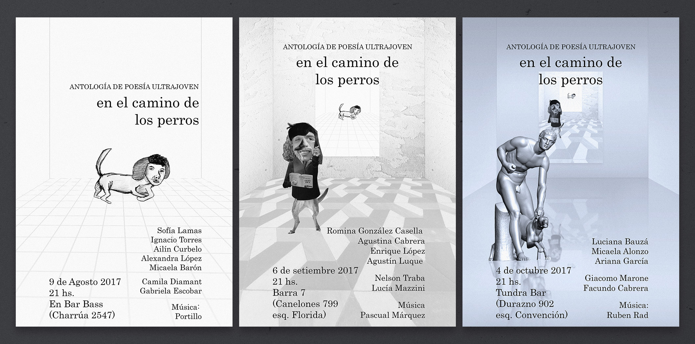
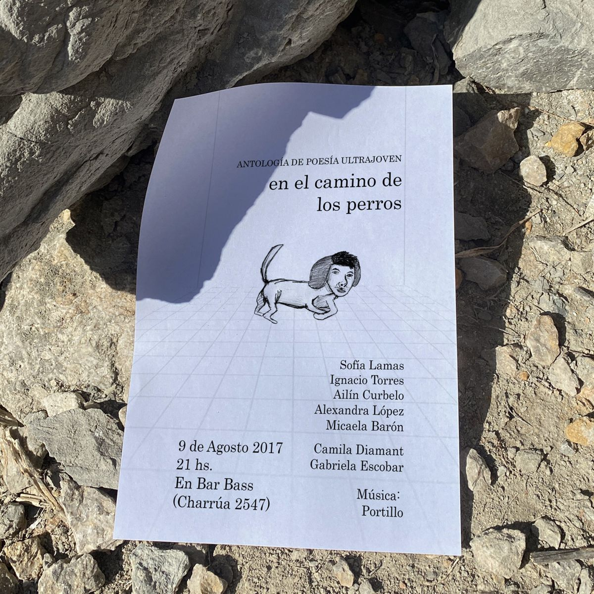
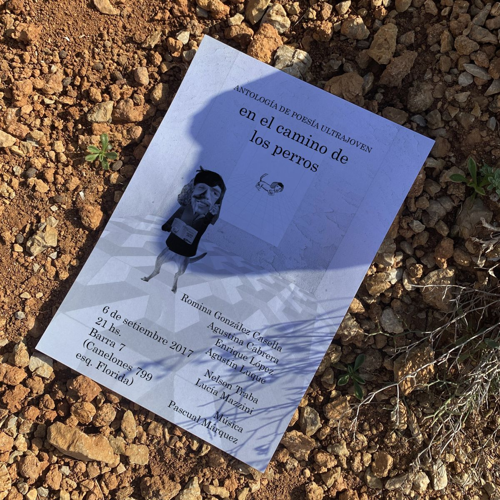
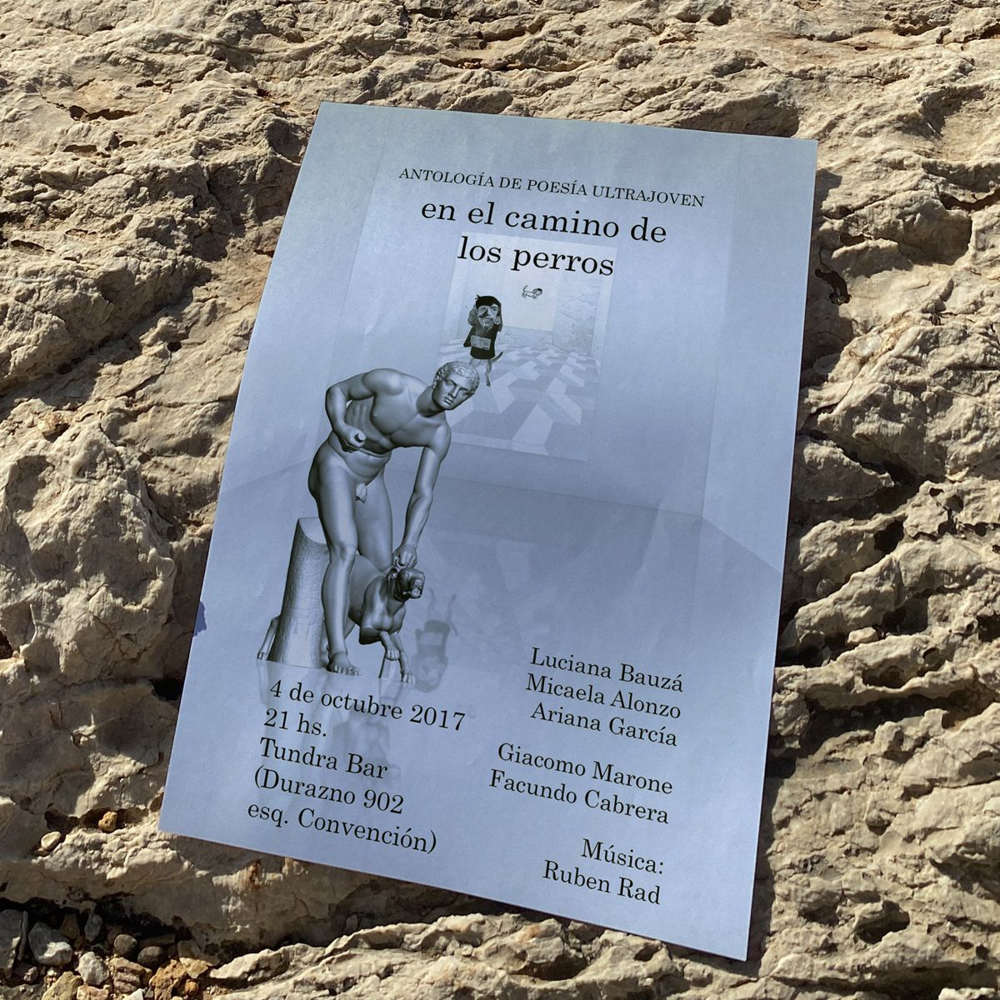

Desde 2015 En el camino de los perros es un colectivo abierto y autogestionado de poetas adolescentes y jóvenes.
Este proyecto apuesta a una educación en arte enfocada en la propia producción de los adolescentes y jóvenes, haciendo hincapié en la formación del juicio estético personal en el marco de la diversidad y el respeto por la diferencia, y en la certeza ética de que la producción artística (y los conocimientos que la rodean) deben ser democratizados.
   